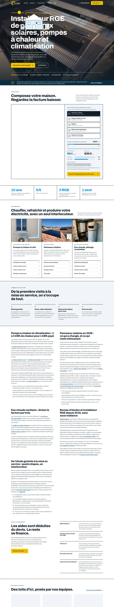
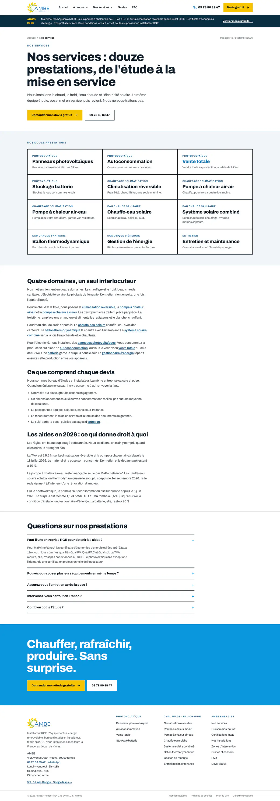
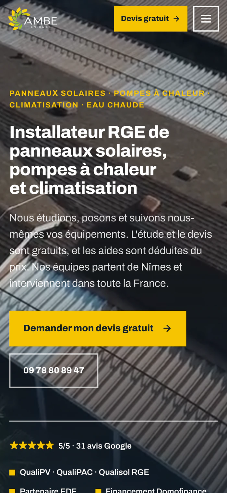

AMB Énergies
Un site d'installateur solaire construit contre le démarchage : dire les mauvaises nouvelles avant que le concurrent les cache.
Le site.
ambenergies.com — la page d'accueil, du hero jusqu'aux réalisations.

Le point de départ.
AMB Énergies pose des panneaux solaires et des pompes à chaleur depuis 2016 au départ de Nîmes, avec ses propres équipes et trois qualifications RGE. Son problème n'est pas la technique, c'est le secteur : le client type a déjà reçu trois appels lui promettant une prime qui n'existe plus, et il arrive méfiant. Le site devait donc faire l'inverse d'une plaquette commerciale et prouver, avant le premier rendez-vous, que l'entreprise ne vend pas au téléphone.
« Nous vous disons ce à quoi vous avez droit avant la signature, pas après. »
Extrait du site ambenergies.com
Ce que j'ai fait.
- Construit 101 pages statiques en HTML multi-pages, sans framework, une page par URL.
- Écrit 65 guides et 12 pages villes pour couvrir les recherches réelles du secteur, plus 12 pages service.
- Assumé un parti pris éditorial rare dans le métier : pas de grille de prix, pas de durée d'amortissement type, et une page d'accueil qui annonce elle-même la suppression d'une prime.
- Corrigé le simulateur à la baisse — il affichait 35 % d'économies là où il en promettait 45, ce que le reste du site démentait.
- Développé un configurateur « Composez votre maison » : on coche des équipements, on règle sa facture au curseur, un schéma SVG et l'estimation se recalculent.
- Livré un formulaire de devis en deux étapes avec envoi réel en PHP et numéro de référence affiché, suivi d'un questionnaire complémentaire de 5 questions facultatives.
- Balisé 98 pages en FAQPage — seules les mentions légales, la politique cookies et le plan du site en sont exemptes.
- Maillé le site à 8 650 liens internes : aucune page orpheline sur les 101.
En chiffres.
Sitemap recompté, liens internes extraits page par page, JSON-LD analysé sur les 101 pages.
La direction artistique.
Un fond gris chaud presque papier plutôt que le blanc clinique habituel du secteur, traversé par un seul rouge-orange saturé réservé aux actions et aux chiffres clés. Tout le reste est en gris neutres : le prix, l'aide ou le bouton de devis sont les seuls points de couleur de l'écran. La police Archivo est auto-hébergée en variable, sous-ensemble aux 114 caractères réellement présents sur le site — 19 556 octets pour l'ensemble.


L'histoire.
Le photovoltaïque est un secteur abîmé par le démarchage. Le client d'AMB a déjà reçu trois appels lui promettant une prime supprimée. J'ai donc construit le site à l'envers d'une plaquette : pas de grille de prix, pas de durée d'amortissement type, et une page d'accueil qui annonce elle-même la suppression de la prime. J'ai même corrigé le simulateur à la baisse — il affichait 35 % d'économies là où il en promettait 45, ce que le reste du site démentait. Le référencement vient de là : 65 guides, 12 pages villes, et des questions auxquelles on répond pour de vrai.
Causons.
Un site à construire, un référencement à reprendre, ou simplement une question technique : je réponds vite, et toujours en personne.
M'écrire un mot →